| 华中世纪星HNC-21T数控系统操作 |
在“视图”下拉菜单或者浮动菜单中选择“控制面板切换”后，数控系统操作键盘会出现在视窗的右上角，其左侧为数控系统显示屏， 如下图所示。用操 作键盘结合显示屏可以进行数控系统操作。
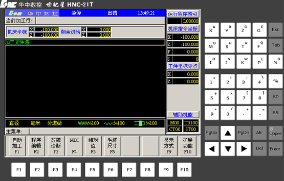
功能键
数字键 字母键
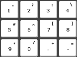
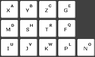
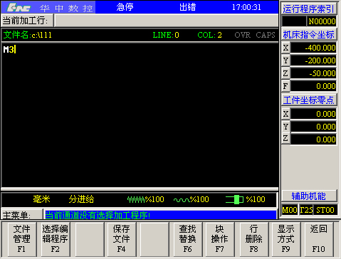
替代键。用输入的数据替代光标所在的数据。
删除键。删除光标所在的数据；或者删除一个数控程序或者删除全部数控程序。
取消键。取消当前操作。
跳档键。
空格键。空出一格。
退格键。删除光标前的一个字符光标向前移动一个字符位置
余下的字符左移一个字符位置
确认键。确认当前操作；结束一行程序的输入并且换行。
上档键。
翻页按钮（PAGE）
向上翻页。
使编辑程序向程序头滚动一屏，光标位置不变。如果到了程序头，则光标移到文件首行的第一个字符处。
向下翻页。
使编辑程序向程序尾滚动一屏，光标位置不变。如果到了程序尾，则光标移到文件末行的第一个字符处。
光标移动（CURSOR）
向上移动光标。
向下移动光标。
向左移动光标。
向右d移动光标。
|
手动操作虚拟数控铣床 |
复位
系统上电进入软件操作界面时，系统的工作方式为“急停 ”，为控制系统运行，需左旋并拔起操作台右上角的“急停”按钮，使 系统复位，并接通伺服电源。系统默认进入“回参考点”方式，软件操作界面的工作方式变为“回零”。
回参考点
控制机床运动的前提是建立机床坐标系，为此，系统接通电源、复位后首先应进行机床各轴回参考点操作。方法如下 ：
(1) 如果系统显示的当前工作方式不是回零方式，按一下控制面板上面的”回零“按键，确保系统处于”回零“方式；
(2) 根据X 轴机床参数“回参考点方向”， 按一下
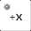
（“回参考点方向"为"+"） 或("回参考点方向"为"- ")按键 ,X 轴回到参考点后,或 按键内的指示灯亮 ,(3) 用同样的方法使用
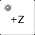
、 按键，可以使Z 轴回参考点。所有轴回参考点后，即建立了机床坐标系。坐标轴移动
手动移动机床坐标轴的操作由手持单元和机床控制面板上的方式选择、轴手动、增量倍率、进给修调、快速修调等按键共同完成。
点动进给
按一下“手动”按键（指示灯亮），系统处于点动运行方式，可点动移动机床坐标轴(下面以点动移动X 轴为例说明) ：
(1) 按压或 按键（指示灯亮），X 轴将产生正向或负向连续移动；
(2) 松开 或 按键（指示灯灭），X 轴即减速停止。
用同样的操作方法使用 、按键可以使Z 轴产生正向或负向连续移动。
点动快速移动
在点动进给时，若同时按压“快进”按键，则产生相应轴的正向或负向快速运动。
点动进给速度选择
在点动进给时，进给速率为系统参数"最高快移速度"的1/3乘以进给修调选择的进给倍率 .
点动快速移动的速率为系统参数"最高快移速度"乘以快速 修调选择的快移倍率.
按压进给修调或快速修调右侧的"100%" 按键,(指示灯亮),进给或快速修调倍率被置为100% ,按一下"+" 按键,修调倍率递增5%,
按一下"- ",按键修调倍率递减5%.
增量进给
当手持单元的坐标轴选择波段开关置于"Off" 档时,按一下 控制面板上的"增量"
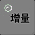
按键(指示灯亮),系统处于增量进给方式, 可增量移动机床坐标轴(下面以增量进给X 轴为例说明) :
(1) 按一下 或 按键(指示灯亮),X 轴将向正向或负向移动一个增量值;
(2) 再按一下 或 按键,X 轴将向正向或负向继续移动一个增量值.
用同样的操作方法使用 、按键,可以使Z 轴向正向或负向移动一个增量值。 同时按一下多个方向
的轴，手动按键每次能增量进给多个坐标轴。
增量值选择
增量进给的增量值由
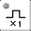
、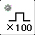
、表所示：
| 增量倍率按键 | ×1 | ×10 | ×100 | ×1000 |
| 增量值（mm） | 0.001 | 0.01 | 0.1 | 1 |
注意：这几个按键互锁，即按一下其中一个（指示灯亮）其余几个会失效（指示灯灭）。
手摇进给
当手持单元的坐标轴选择波段开关置于“X”、“Z”档时，按一下控制面板上的按键（指示灯亮），系统处于手摇进给方式，可手摇进给机床坐标轴(下面以手摇进给 X 轴为例说明) ：
(1) 手持单元的坐标轴选择波段开关置于“X” 档；
(2) 旋转手摇脉冲发生器，可控制X 轴正、负向运动；
(3) 顺时针/逆时针旋转手摇脉冲发生器一格，X 轴将向正向或负向移动一个增量值。
用同样的操作方法使用手持单元可以使Z 轴向正向或负向移动一个增量值。
手摇进给方式每次只能增量进给1 个坐标轴。
手摇倍率选择
手摇进给的增量值（手摇脉冲发生器每转一格的移动量）由手持单元的增量倍率波段开关“×1”、“ ×10”、“ ×100” 控制。增量倍率波段开关的位置和增量值的对应关系如下表：
| 位置 | ×1 | ×10 | ×100 |
| 增量值（mm） | 0.001 | 0.01 | 0.1 |
手动数据输入(MDI)运行(F4～F6)
在主操作界面下按F4 键进入MDI 功能子菜单.
在MDI 功能子菜单下按F6 进入MDI 运行方式，命令行的底色变成了白色并且有光标在闪烁。这时可以 从NC 键盘输入并执行一个G 代码指令段即“MDI 运行”。
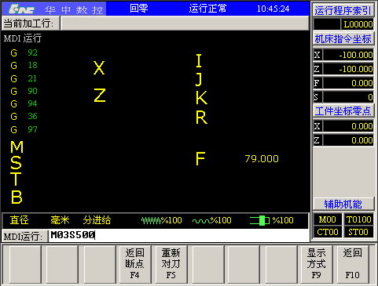
输入MDI 指令段
MDI 输入的最小单位是一个有效指令字。因此，输入一个MDI运行指令段可以有下述两种方法：
(1)一次输入，即一次输入多个指令字的信息；
(2)多次输入，即每次输入一个指令字信息 。
例如要输入“G00 X100 Z1000” MDI 运行指令段，可以
(1)直接输入“G00 X100 Z1000 ”并按Enter 键
(2)先输入“G00 ”并按Enter 键，再输入“X100” 并按Enter 键，然后 输入“Z1000” 并按Enter 键，显示窗口内将依次显示大字符“X100”，“Z1000”。
在输入命令时，可以在命令行看见输入的内容，在按Enter键之前，发现输入错误，
可用、 、键进行编辑，按Enter键后，系统发现输入错误，会提示相应的错误信息。
运行MDI 指令段
在输入完一个MDI
指令段后，按一下操作面板上的 键，系统即开始运行所输入的MDI 指令。
键，系统即开始运行所输入的MDI 指令。
如果输入的MDI 指令信息不完整或存在语法错误，系统会提示相应的错误信息此时不能运行MDI 指令。
修改某一字段的值
在运行MDI 指令段之前，如果要修改输入的某一指令字，可直接在命令行上输入相应的指令字符及数值。
例如在输入“X100” 并按Enter 键后希望X 值变为109，可在命令行上输入“X109” 并按Enter 键。如下图：
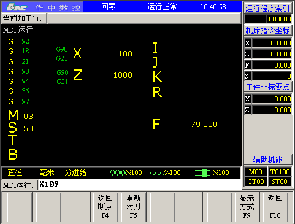
清除当前输入的所有尺寸字数据
在输入MDI 数据后，按F7 键可清除当前输入的所有尺寸字数据（其他指令字依然有效），显示窗口内X、 Y、 Z、 I 、J、 K 、R等字符后面的数据全部消失，此时可重新输入新的数据。
停止当前正在运行的MDI 指令
在系统正在运行MDI 指令时，按F7 键可停止MDI 运行。
|
选择编辑程序 |
选择磁盘程序
(1) 选择“自动加工”菜单中的“程序选择”；
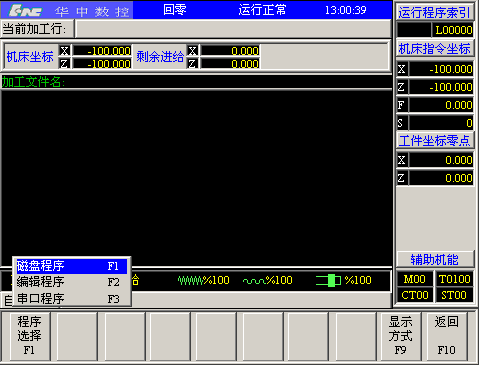
（2）按F1 如下图：
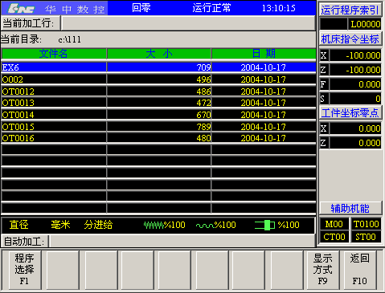
（3）按 光标选择其中的程序，按“ENTER”键，选中的程序被打开。如下图：
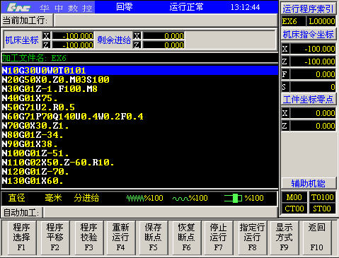
选择编辑程序
编辑完程序，保存好后若要进行加工，步骤如下：
(1) 选择“自动加工”菜单中的“程序选择”
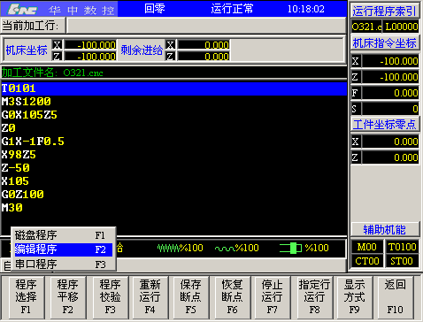
(2) 按F2，所编辑的程序被调出，按 键，程序可运行。
键，程序可运行。
块操作
(1) 打开已编辑好的程序，将光标移动到所要定义的块之前，如下图：
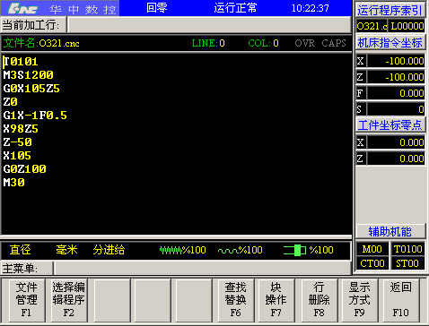
(2) 按F7，用 键选择“定义块头”如下图：
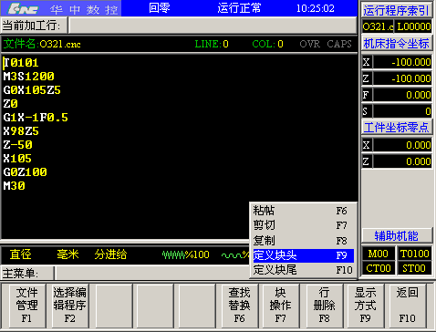
(3) 移动 光标键，选择所要定义块的部分如下图：
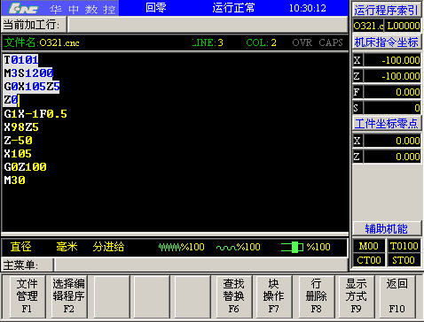
(4) 按F7，选择“定义块尾”，如下图：
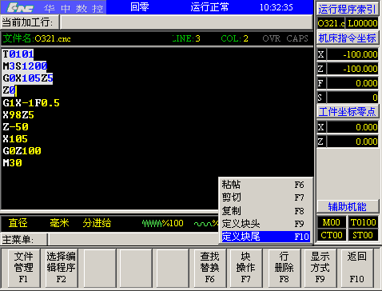
(5) 按F7，选择“复制”或“剪切”后，移动 光标键，将光标移动到所要粘贴的位置，如下图：
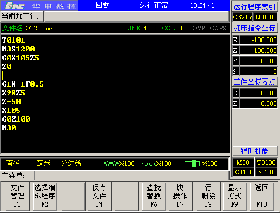
(6) 按F7，选择“粘贴”，定义块的部分就被粘贴在光标处，如下图：
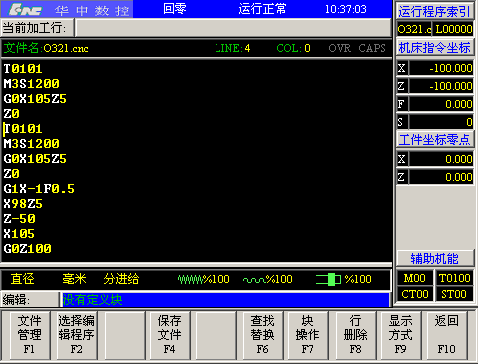
选择当前正在加工的程序进行编辑
选择当前正在加工的程序操作步骤如下
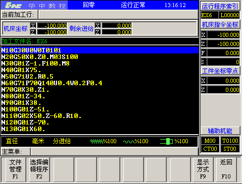
(1) 在调出加工程序后，按F2，按选择编辑程序菜单中按F2选中正在加工的程序选项如下图：
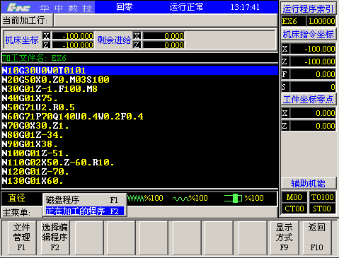
(2) 按光标键既可进行编辑了。
选择一个新文件
新建一个文件进行编辑的操作步骤如下：
(1) 在“文件管理”菜单中用、选中“新建文件”选项
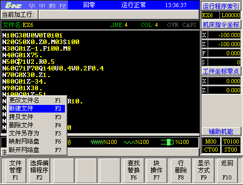
(2) 在输入新文件名栏输入新文件的文件名如NEW
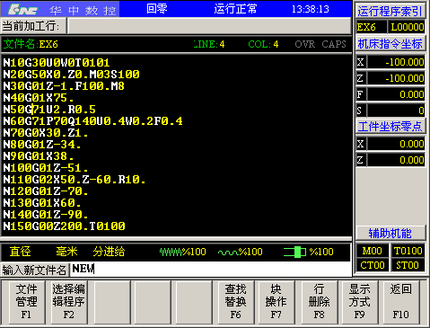
(3) 按Enter 键系统将自动产生一个0 字节的空文件
注意： 新文件不能和当前目录中已经存在的文件同名。
保存程序
编辑好程序后，按F4保存文件。如下图：
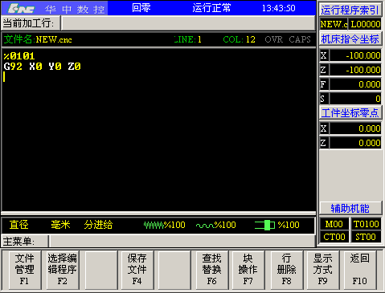
更改程序名
(1) 按“程序编辑”菜单中“文件管理”， 如下图：
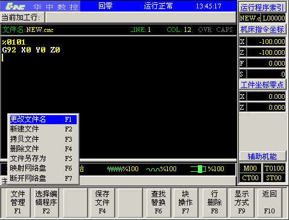
(2) 按F1，用上下光标键选择所要更改文件名的程序，如下图选择NEW
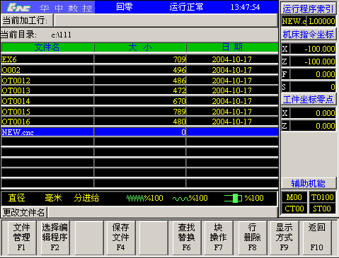
(3) 按“ENTER”键，用 键进行编辑修改。如下图：
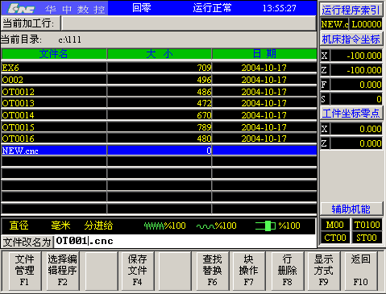
(3) 修改好后，按“ENTER”键，如下图：
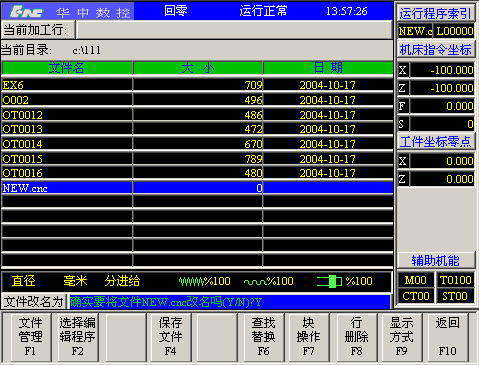
(4) 如确实要更改选中的程序名按“Y”，否则按“N”。
程序编辑
编辑当前程序(F2 F3)
当编辑器获得一个零件程序后，就可以编辑当前程序了，但在编辑过程中退出编辑模式后，再返回到编辑模式时，如果零件程序不处于编辑状态，可在编辑功能子菜单下按F3键进入
编辑状态， 编辑过程中用到的主要快捷键如下：
删除光标后的一个字符，光标位置不变，余下的字符左移一个字符位置。
使编辑程序向程序头滚动一屏，光标位置不变，如果到了程序头则光标移到文件首行的第一个字符处。
使编辑程序向程序尾滚动一屏，光标位置不变，如果 到了程序尾则光标移到文件末行的第一个字符处 。
删除光标前的一个字符，光标向前移动一个字符位置，余下的字符左移一个字符位置。
删除一行(F2 F6)
在编辑状态下按“F6” 键将删除光标所在的程序行。
查找(F2 F7)
在编辑状态下查找字符串的操作步骤如下：
(1) 在编辑功能子菜单下按F7 键
(2) 在查找栏输入要查找的字符串
(3) 按 键从光标处开始向程序结尾搜索
(4) 如果当前编辑程序不存在要查找的字符串将弹出如下图所示的对话框
(5) 如果当前编辑程序存在要查找的字符串，光标将停在找到的字符串后，且被查找到的字符串颜色和背景都将改变
(6) 若要继续查找按F8 键即可。
注意：查找总是从光标处向程序尾进行到文件尾后再从文件头继续往下查找。
替换(F2 F9)
在编辑状态下替换字符串的操作步骤如下：
(1) 在编辑功能子菜单下 按F9 键
(2) 在被替换的字符串栏输入被替换的字符串
(3) 按 键
(4) 在用来替换的字符串栏输入用来替换的字符串
(5) 按Enter 键从光标处开始向程序尾搜索
(6) 按Y 键则替换所有字符串，按N 键则光标停在找到的被替换字符串后。
(7) 按Y 键则替换当前光标处的字符串，按N 键则取消操作。
(8)若要继续替换按F8 键即可。
注意：替换也是从光标处向程序结尾进行到文件尾后再从文件头继续往下替换。
删除程序
(1) 按“程序编辑”菜单中“文件管理”， 如下图：
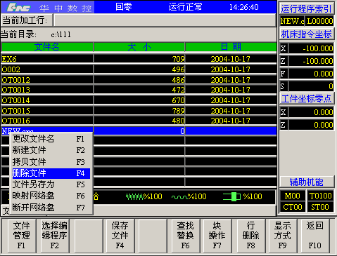
(2) 按F4，用上下光标选择要删除的程序如NEW.cnc
(3) 按“ENTER”键，如下图：
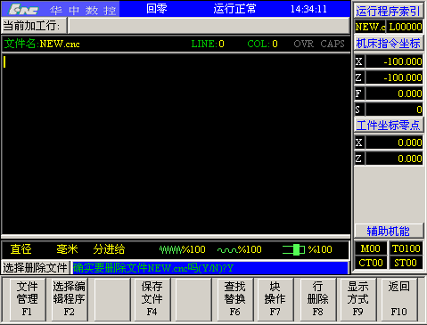
(4) 如确实要删除选中的程序按“Y”，否则按“N”。
启动、暂停、中止、再启动
启动自动运行
系统调入零件加工程序经校验无误后可正式启动运行
(1)
按一下机床控制面板上的 按键（指示灯亮），进入程序运行方式；
按键（指示灯亮），进入程序运行方式；
(2)
按一下机床控制面板上的 按键（指示灯亮），机床开始自动运行调入的零件加工程序。
按键（指示灯亮），机床开始自动运行调入的零件加工程序。
暂停运行
在程序运行的过程中需要暂停运行可按下述步骤操作：
(1) 在程序运行子菜单下按F7 键
(2) 按N 键则暂停程序运行并保留当前运行程序的模态信息。
中止运行
在程序运行的过程中需要中止运行可按下述步骤操作
(1) 在程序运行子菜单下按F7 键
(2) 按Y 键则中止程序运行并卸载当前运行程序的模态信息。
暂停后的再启动
在自动运行暂停状态下，按一下机床控制面板上的“循环起动”按键，系统将从暂停
前的状态重新启动继续运行。
重新运行
在当前加工程序中止自动运行后希望从程序头重新开始运行时，可按下述步骤操作：
(1) 在程序运行子菜单下按F4 键；
(2) 按Y 键则光标将返回到程序头，按N 键则取消重新运行；
(3) 按机床控制面板上的“循环启动”按键，从程序首行开始，重新运行当前加工程序。
空运行
在自动方式下按一下机床控制面板上的 按键（指示灯亮），CNC
处于空运
按键（指示灯亮），CNC
处于空运
行状态，程序中编制的进给速率被忽略，坐标轴以最大快移速度移动 。空运行不
做实际切削，目的在于确认切削路径及程序，在实际切削�r，应关闭此功能否则
可能会造成危险，此功能对螺纹切削无效。
单段运行
按一下机床控制面板上的按键（指示灯亮），系统处于单段自动运行方式，程序控制将逐段执行
(1)
按一下 按键运行一程序段，机床运动轴减速停止，刀具、主轴电机停止运行；
按键运行一程序段，机床运动轴减速停止，刀具、主轴电机停止运行；
(2)
再按一下 按键又执行下一程序段，执行完了后又再次停止。
按键又执行下一程序段，执行完了后又再次停止。
进给速度修调
在自动方式或MDI 运行方式下,当F 代码编程的进给速度偏高或偏低时,可用进给
修调右侧的"100%" 和"+ ""-" 按键，修调程序中编制的进给速度。
按压“100%” 按键（指示灯亮），进给修调倍率被置为100%，按一下“+” 按键
进给修调倍率递增5%， 按一下“-” 按键，进给修调倍率递减5%。
快移速度修调
在自动方式或MDI 运行方式下，可用快速修调右侧的“100% ”和“+”、“ -” 按键，
修调G00 快速移动时系统参数最高快移速度设置的速度。
按压“100%” 按键（指示灯亮），快速修调倍率被置为100%，按一下“+” 按键
快速修调倍率递增5%， 按一下“- ”按键，快速修调倍率递减5%。
主轴修调
在自动方式或MDI 运行方式下，当S 代码编程的主轴速度偏高或偏低时，可
用主轴修调右侧的“100%” 和“+”、“ -" 按键修调程序中编制的主轴速度.
按压"100%" 按键(指示灯亮)，主轴修调倍率被置为100%，按一下“+” 按键，
主轴修调倍率递增5%， 按一下“- ”按键，主轴修调倍率递减5%。机械齿轮
换档时主轴速度不能修调。
|
数据设置 |
坐标系
MDI 输入坐标系数据的操作步骤如下：
(1)在MDI 功能子菜单下按F4 键进入坐标系手动数据输入方式，图形
显示窗口首先显示G54坐标系数据，如下图所示：
(2)按Pgdn 或Pgup 键，选择要输入的数据类型：G55、G56、G57、G58、G59 坐标系当
前工件坐标系的偏置值(坐标系零点相对于机床零点的值)，或当前相对值零点；
(3)在命令行输入所需数据，如输入“X200 Z300”，并按Enter 键，将设置G54 坐标系的X及
Z偏置分别为200、300；如下图所示：
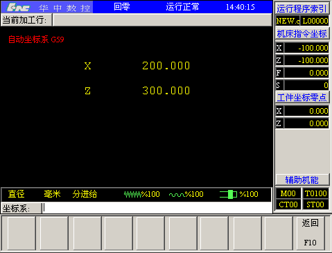
(4)若输入正确，图形显示窗口相应位置将显示修改过的值，否则原值不变。
注意：
编辑的过程中在按Enter 键之前，按Esc 键可退出编辑，但输入的数据将丢失，系统将保
持原值不变。下同。
刀库表
MDI 输入刀库数据的操作步骤如下：
(1) 在MDI 功能子菜单下按“F1”键，进行刀库设置，图形显示窗口将出现刀库数据，如下图所示：
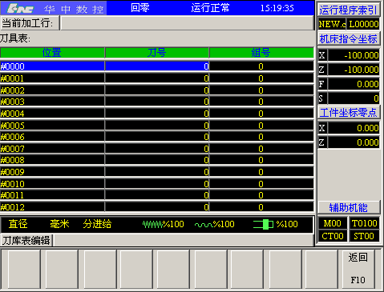
(2) 用、、 、 移动蓝色亮条选择要编辑的选项；
(3) 按Enter 键蓝色亮条所指刀具数据的颜色和背景都发生变化，同时有一光标在闪烁；
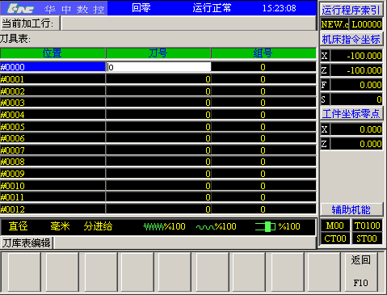
(4) 用 键进行编辑修改；
(5) 修改完毕，按Enter 键确认；
(6) 若输入正确，图形显示窗口相应位置将显示修改过的值，否则原值不变。
刀偏表
MDI 输入刀偏数据的操作步骤如下：
(1) 在MDI 功能子菜单下按F2 键进行刀偏设置，图形显示窗口将出现刀具数据如下图所示：
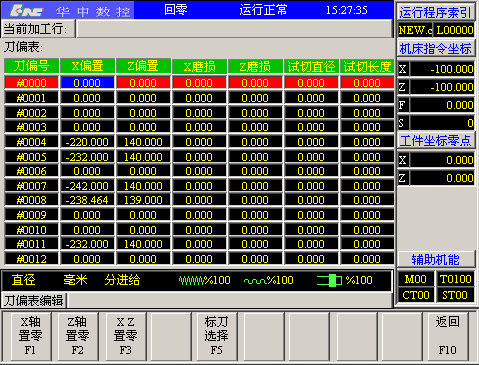
(2) 用 、 移动蓝色亮条选择要编辑的选项；
(3) 按Enter 键蓝色亮条所指刀具数据的颜色和背景都发生变化，同时有一光标在闪烁；
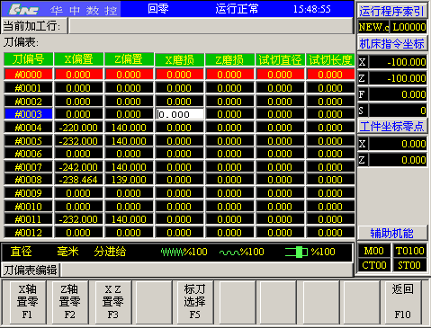
(4) 用 键进行编辑修改；
(5) 修改完毕，按Enter 键确认；
(6) 若输入正确，图形显示窗口相应位置将显示修改过的值，否则原值不变。
刀补表
MDI 输入刀补数据的操作步骤如下：
(1) 在MDI 功能子菜单下按F3 键进行刀补设置，图形显示窗口将出现刀具数据如下图所示：
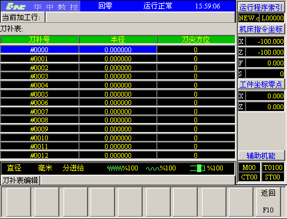
(2) 用 、 移动蓝色亮条选择要编辑的选项；
(3) 按Enter 键蓝色亮条所指刀具数据的颜色和背景都发生变化，同时有一光标在闪烁；
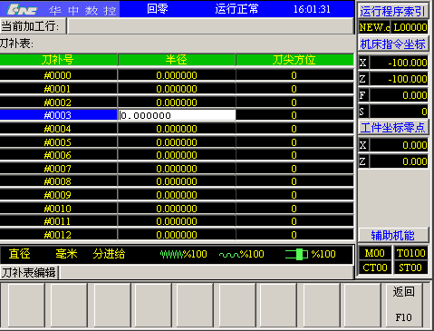
(4) 用 键进行编辑修改；
(5) 修改完毕，按Enter 键确认；
(6) 若输入正确，图形显示窗口相应位置将显示修改过的值，否则原值不变。